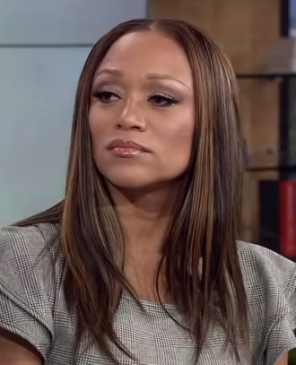

Chanté Moore
Chanté Torrane Moore is an American singer, songwriter, record producer, television personality, and author. The first signee with record executive Louis Silas, Jr.'s Silas Records, she rose to prominence with her debut studio album, Precious (1992). Its first two singles "Love's Taken Over" and "It's Alright" became top 20 hits on the R&B charts, while the album reached Gold status in the United States. In the late 1990s, Moore achieved crossover success with her top ten hit "Chanté's Got a Man," the lead single from her third album This Moment Is Mine (1999), before adopting a new image with hip hop-inflected sounds on Exposed (2000) and its international top 20 hit "Straight Up."
Complete Discography & Tracklists (14)
1999 This Moment Is Mine 🎵 0 Tracks
No tracks registered.
2004 The Best Of Chanté Moore 20th Century Masters The Millennium Collection 🎵 12 Tracks
2007 Precious 🎵 0 Tracks
No tracks registered.